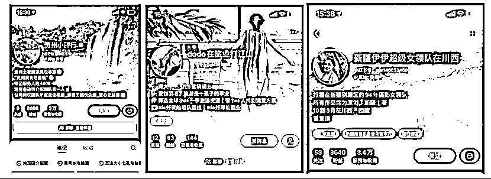
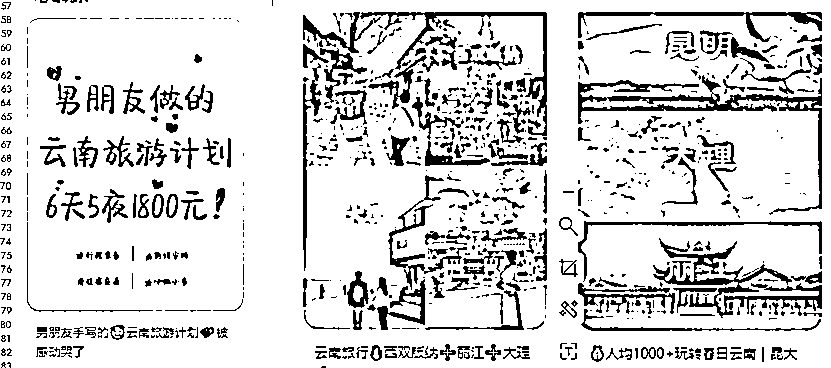

来源：https://ovjdv8vh9g8.feishu.cn/docx/ULbAdXJWVosx2rxeiZ4c9MjNncd
哈喽，大家好，我是7月份加入生财的better。
一个有娃有工作有书看就满足了的普通人，普通到有任何赚钱想法的时候都会给自己设置无限多的不可能，内耗后就觉得干不成放弃了。
比如说我16年就知道生财有术，还＋了亦仁大大的微信，那时虽然对生财很心动想加入，想到自己是个要资源没资源要能力没能力的普通人，加进去看了又能怎么样呢？你能干成啥呢？结果就是没加入！！！
什么叫没有格局？什么叫没眼光什么？什么叫好高骛远？什么叫给自己设限？什么叫付出1分就想收获10分？就是我本人了！！！
今年为啥会加入生财？
1.做了几年小红书，积累了几万粉，但是变现难，都是瞎折腾，迫切需要改变。
2.帮实体店在陪跑小红书，需要持续精进，掌握更多方法和技巧。
3.刚好看到生财有术的公众号有3天体验活动，一进去什么叫刘姥姥逛大观园的感觉算是体验到了。这都是些什么神仙内容呀，太优秀了！我靠，原来可以这样做呀！！！看不完看不完，那3天，每晚看到凌晨3点多，眼睛都睁不开了才罢休。
终于进了生财，现在进了90多天啦！太宝藏啦！给大家看看我在生财看到的商机，也就是今天的分享啦。出境游赛道！！！
在小红书做出境游赛道，太太太太香了！！！
下面，我将从以下四个方面来分享
一.成绩展示
二.如何做小红书旅游号
三.如何加微信和成交
四.新人想做的一些建议
定制游，已交定金2位。总预算11万元。春节出行，行程定制中。
包车订酒店3位客户成交金额12000+，问题咨询2位198元。
现有的迪拜地接社资源，是我定居在迪拜的好朋友开的地接社，她基本上都忙于迪拜本身的市场，没时间也不会做线上引流，她们以前得操作都是跑展会，上携程等平台。现在不少得旅行社依然是一样得模式！！！
因为看到生财旅游风向标，阿渡老师新西兰旅游精华帖还有谢无敌老师公众号上得法国定制游变现得内容
一键直达阿渡老师精华内容
0基础做小红书旅游博主 第一周销售额6.2W的成单秘诀
https://r6kr7evxni.feishu.cn/docx/WOUndXLwtoaro6xB5eMcSeBSn4e
然后看了小红书旅游行业6月月报，迪拜是TOP15的国外旅游目的地
确实是个很好得机会。我就联系了我朋友，帮她试试小红书。我负责小红书引流，拉群后她来承接，就开始干了！
起号到现在4周，干了3周，主要是国庆8天，我旅游去了，这个号空置了8天没理，错过了一大波机会。回来上班后，发现99+消息。要是没休息，估计可以拿到更高得销售额！错失了好多钱钱~
确定是引流到私域变现后，像增粉呀，点赞，收藏这些其实没必要看得过重。重要的是笔记要围绕你想要吸引的人来写，然后笔记流钩子，注重评论区。
定位真的太重要了，这个做好了，输出内容轻松10倍。我个人理解的定位其实就是账号上你的人设？你是谁，可以为用户提供什么？我为什么要相信你？
所以我用的我朋友导游的身份，我朋友导游经验十几年，定居在当地，接待过上万定制用户，十几年的当地美女导游还很真诚爽快，具有天然的信任感。
然后笔记中随时透露你的优缺点，你的能力啥的。就okk啦。
小红书不需要完美人设，我们也没必要去塑造一个自己完全不适合自己的内容的人设哈。有的时候需要装，可以装一时，天天输出内容，装不下去的，容易放弃！哈哈哈！
个人觉得这些内容，更容易引起共鸣！
一部手机号，一个手机号，一个小红书账号，模拟正常用户操作3-5天。
不管是在我之前的实战经验还是航海手册里都强调了养号的重要性，相信我，养了比不养好。
我养了3-5天，每天固定刷迪拜旅游相关的内容，然后模拟正常用户关注评论收藏等，通过这些操作，基本上能了解用户关注迪拜的哪些内容？可以为后续的选题积累素材。现在官方推荐的基本都是迪拜阿布扎比等相关的内容了。
养号期间，不要去装修账号哈，就是啥子都不要设置，我们是真实用户，真实用户大概怎样就怎样操作。
我有一点没做好，大家可以注意下。针对迪拜的和我们后续要出的选题无关的低质内容一定要选择不喜欢。这样有利于你整个账号呈现的内容都是互动数据好的内容，方便你直接每天用来当选题，省的每天找选题花时间。
收藏好的内容时，建议建立文件夹。比如迪拜美食，迪拜景点，迪拜攻略，迪拜穿衣，迪拜酒店。方便你需要内容时，提出来模仿。早做早享受。

专业强调：有专业证书的亮证书，有长时间经验的亮经验，有成功案例的亮案例。
亲和力强调：突出你的个性特点，比如E人，I人等。
注意：如果你没有旅游资质，不要写需要旅游资质相关的内容，比如导游，提供定制游|订酒店|包车。之前设置的可能没问题，我设置了7-8次都被审核不通过！！！
可以添加一些专业性的证书，好景点，服务案例，用户好评。增加用户信任！
旅游赛道笔记的选题真的就辣么几类，然后豹纹会持续爆。基本上集中在如下：
一定要做的X件事、x条建议
手写攻略、手绘地图
地标拼图|朋友圈拼图
旅游避坑全攻略

具体怎么弄？且往下看~

比如：
唯唯诺诺的女生，请你疯狂的看这些纪录片——唯唯诺诺的女生，请你来迪拜重启人生
你除了玩手机，周末还可以做的100件事儿——你除了玩手机，还可以跟着刘亦菲去阿布扎比
真希望早几年看到这段话”——爱自己的100种方式，真希望早几年来迪拜旅游
首图是吸引用户点击的方式，重要度确实很高。但是旅游那些手绘图太难了，根本就不想去做，也没那么多时间去做。我没有去卷首图，如果你审美不行，作图能力欠缺，不用死磕图哈。尤其是做一张图花几个小时，又没流量真的很打击士气，真的干不下去，咱不会做就换种方式做攻略，扬长避短！！
比如说：word打印版攻略|手写攻略。那种当地服饰的美女图也很欧克
（1）水军通过搜关键词，找到笔记进行评论效果是最好的。做起来会比较麻烦！
（2）写好评论，发给朋友或者家人，让她们你写的文字进行评论
（3）直接把链接和写好的评论发到互动群里，要求别人按照要求互动，一条0.5-1元钱。
注意：不要同一批人在你的笔记下，一直回复类似的内容。
我基本都是先告知她迪拜的安全情况，气温，以及穿衣建议，免签等。然后再询问是否想来旅游，我这边是10年导游，有需要帮忙可以找我~~这样回复率挺高的！
（1）矩阵操作：一个账号被禁言或者限制流量还有其他号正常搞起来，一个号就只能等！多账号后，引流可以怎么操作？
1）把小红书ID设置成微信号，简介说地球号和红薯号一样
2）建立群聊，群聊引流，记得关联每篇帖子，以及置顶群口令
3）建立小号
简介@小号，评论区@小号，小号回复大号用户问题，小号主动去私信用户：我是XX的助手，挖掘用户需求，引导加V
4）开通专业号，开署店，基本上没啥成本。会安全很多
（2）认证企业号投聚光
烧钱操作，这个需要先有旅行社资质，比较难搞。要不就是你合作的旅行社提供给你，要不就是你自己网上买一个应付认证，问了下价格境外游8000，有点贵！然后每个月投流大概还需要3000左右。但是看他们投流就真的很爽呀！多么丝滑呀~~
建议跑通了跑通了再考虑入手！！！
一样的需要模仿正常用户的微信号操作养号，然后装修微信号。我是微信号同步小红书头像和昵称，简介。然后朋友圈日更【案例，美食，生活，产品分享】，让用户产生信任感！这里又可以说挺多的，不废话了，生财的朋友圈航海手册写的肥肠好，超级有用！
以前真的真的很讨厌销售，现在自己变成了微信销售。感觉销售是个技术活呀。
目前学会的模式是：了解需求+案例+渲染+逼单
前面1周多，不太懂，不好意思谈钱，想着先服务，用户认可了再收费。结果忙断腿，用户拿了行程就不回复了，或者咨询了几十个问题后就没影了。
解决方案：
自我介绍的时候就明确提出，具体的服务，费用预算，免费回复的问题数量，如果更多问题咨询，可以付费咨询。
在聊的过程中就看看用户的小红书，以及从沟通中判断用户类型，需求迫切就多聊点，如果明显感觉就是想来问问价格的，各种问题的及时告知付费咨询。以及多告知几次服务类型。
像跟团游不是购物团的话，基本都是几百块钱一个人，咱花同样的时间写内容，引导私域，流程都差不多，肯定是定制游更划算的，而且定制类你接触到的都是高客单价用户，沉淀私域，还有更多成交的可能。
供应链=销售能力强+交付能力强的地接社/旅行社+打钱快
销售能力强，你提供的客资转化能力就很强，你拿佣金就越容易
交付能力强，意味着专业，经验丰富，用户满意度高，就不会出现各种扯皮情况影响你的时间，还会为你带来更多优质客户，赚钱钱就更容易啦。
打钱快，靠谱，可以长期合作呀。互利共赢！！！
当然，这么完美的供应链真的存在么？存在，但你这么幸运能都遇到么？难！
（1）有朋友同学在国外留学工作，让朋友帮忙引荐，去聊聊看
（2）自己在小红书上面找，目前认证了小红书旅行社的也不少，可以去聊聊看。建议以用户的角度去聊，看看人家做的定制游是否符合高端定制的要求，包括行程路线，聊天方式等等。我接触到很多做定制游的，其实非常的不定制，就是团味很浓，像这种就不建议你继续聊合作了。
（3）找@阿渡老师，她们现在谈了一批靠谱的供应链资源，大家小红书去做内容就行啦。如果想做迪拜阿布扎比线路的也可以找我！！！哈哈哈哈~~
说实话，凭借自己去找靠谱的供应链真的挺难也很费时间。如果不是有靠谱的朋友本来在做，或者有有资源的朋友引荐，即使找到了，人家也不会跟你合作。有实力的旅行社在你没有背书没有大流量的前提下是不会跟你合作的。
（1）引流到私域后，你直接把人拉到供应链群里，由他们直接对接。
（2）引流到私域后，你确定对方需求，对方交定金，你再拉群定制，这种佣金比例相对更高，成单效果也更好，但是需要你有一定销售技巧，对目的地比较熟悉，不然你没办法回复用户问题。
（3）针对无法嫌贵的用户，想要自由行的用户。咱推广个付费咨询服务，为她提供咨询。如果你能做（2），做（3）就是纯赚啦。
（4）当你的账号达到一定粉丝量，会有其他合作方主动跟你链接服务。比如接广告，推广酒店啊，新景点啥的。还有一些留学机构，学汉语机构会链接你想要你引流。
如果你跟我一样，也是0基础做旅游账号，在做账号|对接用户|对接供应链的时候你会遇到各种各样的问题，这时候真的很容易崩溃。撂挑子不干！！怎么办呢？
好啦，以上就是我所有的分享啦，快6000字，有点长。给能看完的人比心心，谢谢啦！我是better，做迪拜旅游！有需要可以多多链接呀~